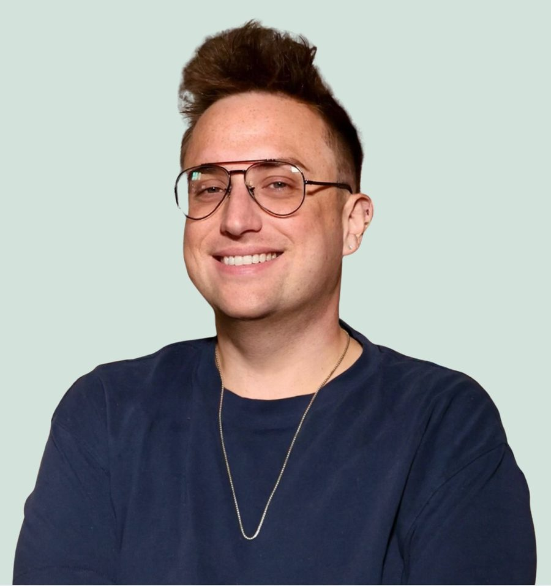

Practice growth strategy for therapists
You were trained to do therapy, not marketing.
Full Panel helps private-practice therapists build the referral relationships, directory profiles and search visibility that keep a caseload full, with marketing that's clinician-informed and fits the ethics you already practice under.
Free, no pressure, no pitch deck.
The gap
Nothing in your program covered this, and that isn't a gap in you.
Counseling programs teach you how to sit with a client. They don't teach you how that client finds you in the first place, and most of the marketing advice out there wasn't written with a clinician in mind.
- Your Psychology Today profile has been live for months, and the inquiries are a trickle, or they're for work you don't do.
- You know you should be connecting with local doctors, but a cold email to a PCP feels like selling, and you're not sure what you're even allowed to say.
- Every agency pitch you've seen promises to "10x your practice," which is exactly the kind of language your clients would run from.
Growing a practice is relationship work, and relationship work is something you already know how to do. It just needs a structure, a plan and someone who understands both sides of it.
Services
Six ways I can help, starting with an audit.
Most practices don't need all six. The audit tells us which ones will make a difference for yours, and in what order.
How it works
Start with the audit, then take on only what you need.
Audit
I research how clients find therapists in your market, map where your referrals come from now, and hand you a prioritized roadmap.
Start hereImplementation
You choose the tracks that fit: referral partners, directories, search, ads or social. I do the work with you, not just hand you a checklist.
Retainer
Optional. A monthly rhythm to keep relationships warm, listings current and new channels tested as your practice changes.
Why me
I've spent my career on the referral side of health care, and now I'm training on the clinical side.
I'm finishing my M.S.Ed. in Mental Health Counseling at Penn and seeing clients as an intern therapist, so I know the ethics code isn't an afterthought. Before that, building referral relationships between clinicians and health systems was my job.
- 300+
referral sources I served as liaison to, growing referral volume 133% over baselineAccentCare, home health and hospice
- 150+
referral relationships managed across the continuum of care, including Penn Medicine and Jefferson HealthKeystoneCare
- 100+
value-based provider partnerships, plus a two-way behavioral health referral pathway built with a staff psychologistPatina, integrated primary care for adults 65+
These are results from my own roles in health care before Full Panel, not outcomes for therapy practices.
Ethics-aligned
Marketing that you won't have to explain to your licensing board.
The rules around testimonials, referrals and advertising are there to protect clients. Every recommendation I make is built to work within them.
- No client testimonials or reviews solicitedWe build word of mouth in ways the ACA Code and your board allow, without asking current or former clients to vouch for you.
- Nothing given or received for referralsReferral partnerships run on trust and good follow-up, never on gifts, fee splits or kickbacks.
- Copy that names feelings, not storiesYour site speaks to what clients are going through without borrowing anyone's story to sell your services.
- Health ad rules handledGoogle and Meta limit how health services can be targeted and described. Campaigns are built to stay inside those lines.
Talk it through with someone who gets it.
Free, no pressure, no pitch deck.
Services
Everything a practice needs to be found, trusted and referred to.
Each service works on its own, but most engagements start with the audit so we spend your time and budget on what will actually move your caseload.
Not sure where to start? That's what the consult is for.
Free, no pressure, no pitch deck.
How it works
A clear path from a first conversation to a steady referral stream.
You'll always know what we're working on, why it's first and what it will take from you. There's no long contract and nothing to sign before the audit.
Before we begin
A free consult to see if it's a fit.
We'll talk about your practice, who you want to work with and what you've already tried. If I think I can help, I'll tell you what I'd look at first. If I don't, I'll say so and point you somewhere useful.
-
Practice Growth Audit & Roadmap
I look at your market the way a potential client does, from search results and directories to the doctors and schools who might send people your way. Then I map where your current clients actually come from.
- Market research on how clients find therapists near you
- A map of your current and missing acquisition channels
- A branded strategy deck with priorities, in order
- A walkthrough call to go over it together
-
Implementation tracks
You pick the tracks from the roadmap you want to take on now. Each one has a defined scope and a clear finish line, so you can add another later without starting over.
- Referral Partner Development
- Directory & Listings Management
- Search Visibility: SEO + AI Search
- Paid Advertising
- Social Media & Content Strategy
-
Monthly retainer, if you want one
Referral relationships need tending, and listings drift out of date. A retainer keeps a steady cadence going so the work doesn't fade once the initial push is done.
- Ongoing referral partner outreach and follow-up
- Listing and profile upkeep
- A monthly check-in on what's working
Questions
What therapists usually ask first.
I'm not comfortable with marketing. Is that a problem?
Not at all. A lot of therapists feel that way, and I get it. Most of what I do looks less like advertising and more like the professional relationship-building you'd do anyway, with a plan behind it. We'll never do anything that feels out of line with how you practice.
Do I need to be on insurance panels?
No. I work with private-pay, in-network and mixed practices. Which channels matter most changes depending on how you get paid, and the audit takes that into account.
Can you guarantee a full caseload?
No, and I'd be wary of anyone who does. What I can promise is a clear picture of how clients find therapists in your area, a plan built around it and steady follow-through.
How long does it take to see results?
It depends on the channel. Fixing a directory profile or a Google Business Profile can make a difference fairly quickly, while referral relationships with physicians and other providers usually take a few months of consistent contact to pay off.
What does it cost?
It depends on which services you need and the size of your practice. After our consult, I'll give you a clear quote before any work begins. Paid ad budgets are separate and can start around $50 a month.
Will you need access to client information?
No. I never need client names, records or any protected health information. When we look at where clients come from, we work with counts and sources, not people.
Ready to see what your audit would cover?
Free, no pressure, no pitch deck.

About
Hi, I'm Clay.
I'm a counselor in training at the University of Pennsylvania, and I spent the years before that building referral relationships in health care. Full Panel is where those two paths meet.
I see clients as an intern therapist at Sunflower Radiance Counseling in Glenolden, where I work with individuals and relationships from an LGBTQ+- and neurodivergent-affirming lens. I'll finish my M.S.Ed. in Mental Health Counseling in May 2027, and I'm getting ready to open my own practice, Layered Health, in Philadelphia that summer.
Before I was in the therapist's chair, my work was getting people to the right care. At Patina, I built a two-way behavioral health referral pathway alongside the company's behavioral health leadership and helped launch its first go-to-market strategy. At AccentCare and KeystoneCare, I built and managed hundreds of referral relationships with physicians and health systems, including Penn Medicine and Jefferson Health. At Health Union, I directed content strategy for online communities of patients and caregivers. Today I also work in sales development at Doppler, where I run outreach and wrote the playbook for it.
I kept noticing that nothing in my training covered how clients actually find a therapist.
My classmates and colleagues are some of the most thoughtful clinicians I know, and many of them are quietly worried about filling their caseloads. The advice they get tends to come from agencies that don't understand the ethics code, or from colleagues who got lucky. I think therapists deserve something better than either, from someone who respects the work and knows the rules because they practice under them too.
I'm building Layered Health with the same approach I use with Full Panel clients, so everything I recommend is something I'm willing to do myself.
Background
Where the experience comes from.
- Education
M.S.Ed. in Mental Health Counseling, University of Pennsylvania (expected May 2027)M.A. in Public Policy, Stony Brook University · B.A. in Political Science, SUNY Empire State University
- Clinical
Intern Therapist, Sunflower Radiance CounselingPreviously Clinical Intern, Kolmac Integrated Behavioral Health (IOP and outpatient groups)
- Referral development
KeystoneCare, AccentCare and PatinaReferral relationships, provider partnerships and a behavioral health referral pathway in integrated primary care
- Content and community
Health UnionContent strategy for digital patient and caregiver communities; managed two content teams
- Sales and outreach
DopplerOutbound pipeline, account prioritization and a multi-channel outreach playbook
- Community
Board of Directors, Mazzoni CenterPhiladelphia's LGBTQ+ health and wellness center
- Affiliations
AASECT, NAADC, NEI and the Philadelphia Society for Psychoanalytic PsychologyMarketing Career Development Program, Reforge
I'd love to hear about your practice.
Free, no pressure, no pitch deck.
Book a free consult
Let's talk about your practice.
Tell me a little about where you are, and I'll follow up to find a time that works. The consult is free, and there's no obligation to do anything after it.
What we'll cover
- Who you want to work with and who's reaching you now
- Where your current clients come from
- What you've already tried, and what felt off about it
- Whether an audit makes sense, and what it would look at first
Prefer email?
Pick a time
Rather book the consult yourself?
Choose any open time and it goes straight on my calendar.